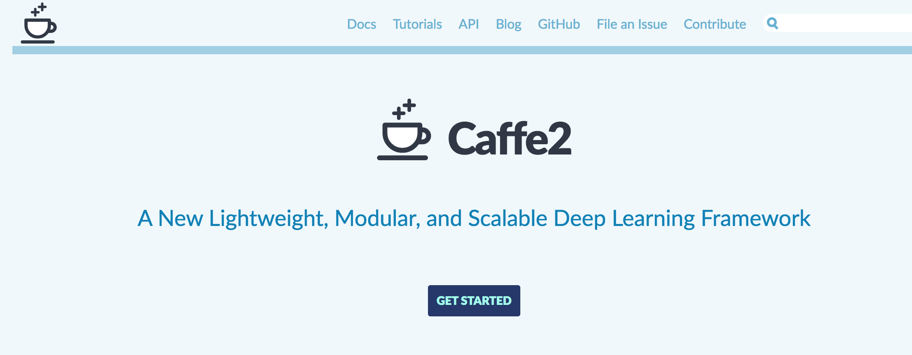
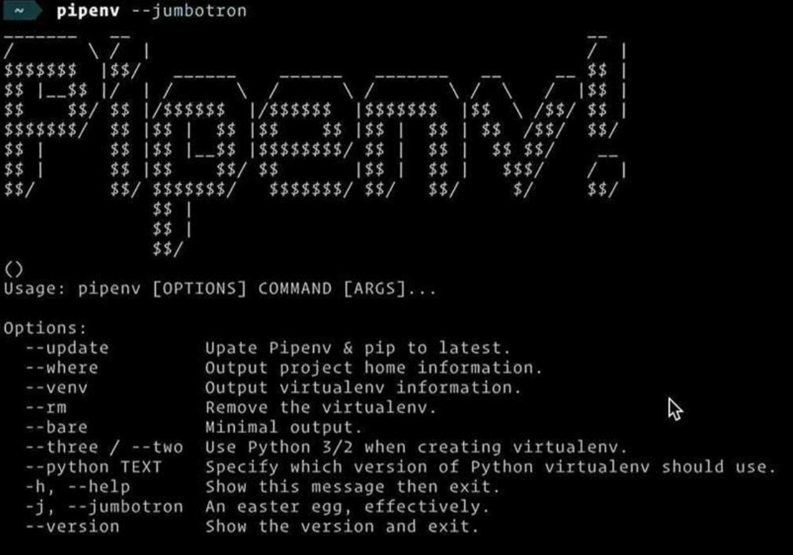
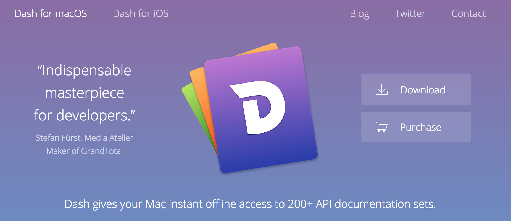
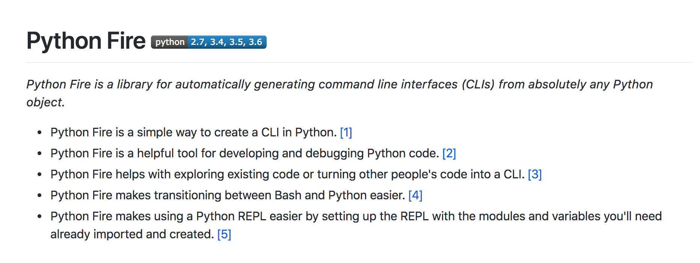
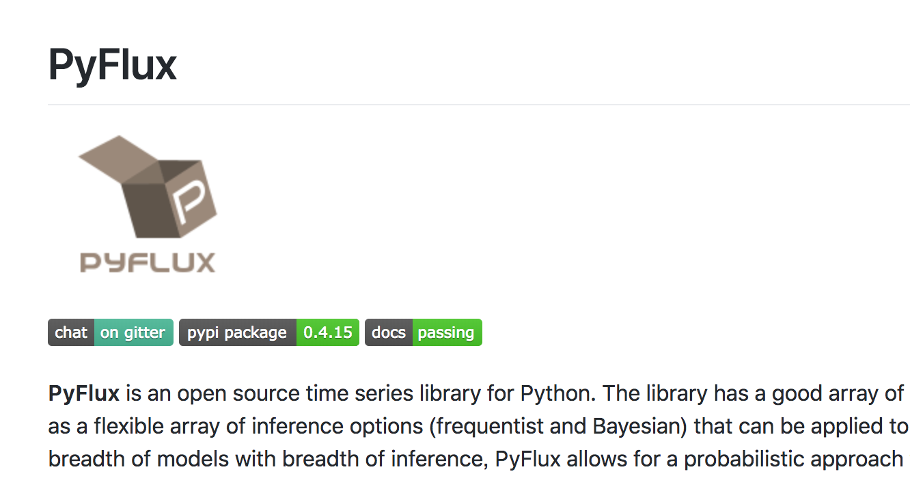
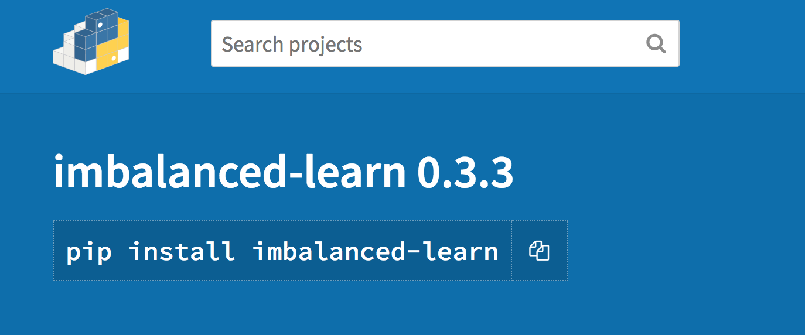
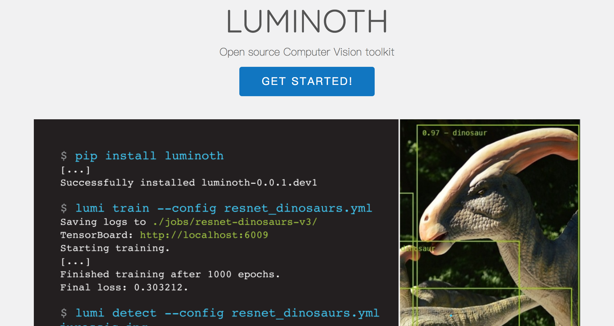

<!DOCTYPE html><html><head><meta charset="utf-8"><title>十个最受欢迎的机器学习Python库，你知道几个？ | 技术学派</title><meta name="viewport" content="width=device-width,initial-scale=1,maximum-scale=1"><meta name="keywords" content="IT培训, Python, 大数据, 人工智能, Web前端, PHP, python"><meta name="description" content="2018年将会是人工智能和机器学习快速发展的一年，有专家表示：相较之下Python比Java更加接地气，也自然而然地成为机器学习的首选语言。今天我们就来介绍一下最受欢迎的机器学习库，希望你能够在这里寻找到你未来一段时间内的“利器”。PyTorch脸谱网今年推出的，在深入学习社区是非常受欢迎。pytorch是建立在一个受欢迎的火炬框架，特别是基于Python。考虑到过去几年人们一直在使用Python"><meta name="keywords" content="python"><meta property="og:type" content="article"><meta property="og:title" content="十个最受欢迎的机器学习Python库，你知道几个？"><meta property="og:url" content="http://www.JiShuXuePai.com/blog/插件资源库/插件资源库/十个最受欢迎的机器学习Python库，你知道几个？/index.html"><meta property="og:site_name" content="技术学派"><meta property="og:description" content="2018年将会是人工智能和机器学习快速发展的一年，有专家表示：相较之下Python比Java更加接地气，也自然而然地成为机器学习的首选语言。今天我们就来介绍一下最受欢迎的机器学习库，希望你能够在这里寻找到你未来一段时间内的“利器”。PyTorch脸谱网今年推出的，在深入学习社区是非常受欢迎。pytorch是建立在一个受欢迎的火炬框架，特别是基于Python。考虑到过去几年人们一直在使用Python"><meta property="og:locale" content="zh-CN"><meta property="og:image" content="http://www.jishuxuepai.com/blog/插件资源库/插件资源库/十个最受欢迎的机器学习Python库，你知道几个？/PyTorch.png"><meta property="og:updated_time" content="2018-05-22T08:50:51.847Z"><meta name="twitter:card" content="summary"><meta name="twitter:title" content="十个最受欢迎的机器学习Python库，你知道几个？"><meta name="twitter:description" content="2018年将会是人工智能和机器学习快速发展的一年，有专家表示：相较之下Python比Java更加接地气，也自然而然地成为机器学习的首选语言。今天我们就来介绍一下最受欢迎的机器学习库，希望你能够在这里寻找到你未来一段时间内的“利器”。PyTorch脸谱网今年推出的，在深入学习社区是非常受欢迎。pytorch是建立在一个受欢迎的火炬框架，特别是基于Python。考虑到过去几年人们一直在使用Python"><meta name="twitter:image" content="http://www.jishuxuepai.com/blog/插件资源库/插件资源库/十个最受欢迎的机器学习Python库，你知道几个？/PyTorch.png"><link rel="stylesheet" href="/libs/bootstrap/bootstrap-grid.css"><link rel="stylesheet" href="/libs/font-awesome/css/font-awesome.min.css"><link rel="stylesheet" href="/libs/titillium-web/styles.css"><link rel="stylesheet" href="/libs/source-code-pro/styles.css"><link rel="stylesheet" href="/css/style.css"><script src="/libs/jquery/jquery.min.js"></script><link rel="stylesheet" href="/libs/lightgallery/css/lightgallery.min.css"><link rel="stylesheet" href="/libs/justified-gallery/justifiedGallery.min.css"><script>var _hmt=_hmt||[];!function(){var e=document.createElement("script");e.src="//hm.baidu.com/hm.js?4c1bd812de3c30edbaa2b803c66f0a04";var t=document.getElementsByTagName("script")[0];t.parentNode.insertBefore(e,t)}()</script></head></html><body><div id="wrap"><header id="header"><div id="header-outer" class="outer"><div class="container"><div class="container-inner"><div id="header-title"><h1 class="logo-wrap"><a href="/" class="logo"></a></h1></div><div id="header-inner" class="nav-container"><a id="main-nav-toggle" class="nav-icon fa fa-bars">菜单</a><div class="nav-container-inner"><ul id="main-nav"><li class="main-nav-list-item"><a class="main-nav-list-link" href="/">主页</a></li><li class="main-nav-list-item"><a class="main-nav-list-link" href="/edu/index.html">学编程</a></li><li class="main-nav-list-item"><a class="main-nav-list-link" href="/blog/">博客</a></li><li class="main-nav-list-item"><a class="main-nav-list-link" href="/tips.html">学习建议</a></li><li class="main-nav-list-item"><a class="main-nav-list-link" href="/about.html">关于</a></li></ul><nav id="sub-nav"><div id="search-form-wrap"><form class="search-form"><input type="text" class="ins-search-input search-form-input" placeholder="搜索"> <button type="submit" class="search-form-submit"></button></form><div class="ins-search"><div class="ins-search-mask"></div><div class="ins-search-container"><div class="ins-input-wrapper"><input type="text" class="ins-search-input" placeholder="想要查找什么..."> <span class="ins-close ins-selectable"><i class="fa fa-times-circle"></i></span></div><div class="ins-section-wrapper"><div class="ins-section-container"></div></div></div></div><script>window.INSIGHT_CONFIG={TRANSLATION:{POSTS:"文章",PAGES:"页面",CATEGORIES:"分类",TAGS:"标签",UNTITLED:"(未命名)"},ROOT_URL:"/",CONTENT_URL:"/content.json"}</script><script src="/js/insight.js"></script></div></nav></div></div></div></div></div></header><div class="container"><div class="main-body container-inner"><div class="main-body-inner"><section id="main"><div class="main-body-header"><h1 class="header"><a class="page-title-link" href="/categories/插件资源库/">插件资源库</a><div class="author">张桐硕</div></h1></div><div class="main-body-content"><article id="post-插件资源库/十个最受欢迎的机器学习Python库，你知道几个？" class="article article-single article-type-post" itemscope itemprop="blogPost"><div class="article-inner"><header class="article-header"><h1 class="article-title" itemprop="name">十个最受欢迎的机器学习Python库，你知道几个？</h1></header><div class="article-meta"><div class="article-date"><a href="/blog/插件资源库/插件资源库/十个最受欢迎的机器学习Python库，你知道几个？/" class="article-date"><time datetime="2018-05-21T09:53:31.105Z" itemprop="datePublished">2018-05-21</time></a></div><div class="article-tag"><i class="fa fa-tag"></i> <a class="tag-link" href="/tags/python/">python</a></div></div><div class="article-entry" itemprop="articleBody"><blockquote><p>2018年将会是人工智能和机器学习快速发展的一年，有专家表示：相较之下Python比Java更加接地气，也自然而然地成为机器学习的首选语言。</p></blockquote><p>今天我们就来介绍一下最受欢迎的机器学习库，希望你能够在这里寻找到你未来一段时间内的<strong>“利器”</strong>。</p><h3 id="PyTorch"><a href="#PyTorch" class="headerlink" title="PyTorch"></a>PyTorch</h3><blockquote><p>脸谱网今年推出的，在深入学习社区是非常受欢迎。pytorch是建立在一个受欢迎的火炬框架，特别是基于Python。考虑到过去几年人们一直在使用Python进行数据科学研究，这也是大多数学习库使用Python的原因。</p></blockquote><figure class="highlight plain"><table><tr><td class="gutter"><pre><span class="line">1</span><br></pre></td><td class="code"><pre><span class="line">项目地址：https://pytorch.org/</span><br></pre></td></tr></table></figure><h3 id="Caffe2"><a href="#Caffe2" class="headerlink" title="Caffe2"></a>Caffe2</h3><blockquote><p>今年，脸谱网还发布了另一个DL框架，牛奶。原来的Caffe框架已被广泛使用多年，以其很好的性能和测试代码库。然而，DL最近的趋势使得这个框架在某些方面有所突破。所以牛奶代替了它。</p></blockquote><p></p><figure class="highlight plain"><table><tr><td class="gutter"><pre><span class="line">1</span><br></pre></td><td class="code"><pre><span class="line">项目地址：https://caffe2.ai/</span><br></pre></td></tr></table></figure><h3 id="Pipenv"><a href="#Pipenv" class="headerlink" title="Pipenv"></a>Pipenv</h3><blockquote><p>pipenv是今年初管理依赖官方推荐工具。pipenv最初是一个项目由Kenneth Reitz创建，其目的是整合其他软件包管理器的创新，比如故宫或纱，Python。安装virtualenv和virtualenvwrapper，确保依赖版本的依赖版本的重复性。Pipenv，你可以指定所有的依赖性，通常使用命令来添加，删除或更新的依赖。该工具可以生成一个文件，使您的构建具有确定性，可以帮助您避免难以捕获的bug。</p></blockquote><p></p><figure class="highlight plain"><table><tr><td class="gutter"><pre><span class="line">1</span><br></pre></td><td class="code"><pre><span class="line">项目地址：https://github.com/pypa/pipenv</span><br></pre></td></tr></table></figure><h3 id="Pendulum"><a href="#Pendulum" class="headerlink" title="Pendulum"></a>Pendulum</h3><blockquote><p>一个摆的优点是，它是Python标准DateTime类的直接替代品，所以你可以很容易地将它与现有的代码，只在需要的时候使用它。作者特别注意确保时区得到正确处理，并默认每个实例时区的时区被感知。你也会得到一个扩展timedelta，所以它更容易的日期和时间。</p></blockquote><p></p><figure class="highlight plain"><table><tr><td class="gutter"><pre><span class="line">1</span><br></pre></td><td class="code"><pre><span class="line">项目地址：https://github.com/sdispater/pendulum</span><br></pre></td></tr></table></figure><h3 id="Dash"><a href="#Dash" class="headerlink" title="Dash"></a>Dash</h3><blockquote><p>如果你是做科学的数据，你可以使用优秀的工具，如大熊猫、scikit在Python的系统学习。你也可以使用jupyternotebook来管理你的工作流程。但是当你和那些不知道如何使用这些工具的人一起工作时，你会怎么做呢？如何构建一个界面，让人们在整个过程中轻松地播放数据并可视化它们？在过去，您可能需要一个专业的JavaScript前端团队来构建这些GUI。</p></blockquote><p></p><figure class="highlight plain"><table><tr><td class="gutter"><pre><span class="line">1</span><br></pre></td><td class="code"><pre><span class="line">项目地址：https://kapeli.com/dash</span><br></pre></td></tr></table></figure><h3 id="Fire"><a href="#Fire" class="headerlink" title="Fire"></a>Fire</h3><blockquote><p>火灾是一个开源库。它可以为任何python项目自动生成CLI。钥匙是自动的。您几乎不需要编写任何代码或文档来构建CLI。你只需要调用一个火方法并把它传递给它需要构建的CLI。</p></blockquote><p></p><figure class="highlight plain"><table><tr><td class="gutter"><pre><span class="line">1</span><br></pre></td><td class="code"><pre><span class="line">项目地址：https://github.com/google/python-fire</span><br></pre></td></tr></table></figure><h3 id="PyFlux"><a href="#PyFlux" class="headerlink" title="PyFlux"></a>PyFlux</h3><blockquote><p>pyflux是一个开源库的Python，特别是时间序列的发展。时间序列研究是统计学和计量经济学的一个分支，它可以描述时间序列是如何表达的（由潜在因素或利益特征表示）和预测未来行为。pyflux允许时间序列建模的使用，和现代时间序列GARCH模型等已实施。</p></blockquote><p></p><figure class="highlight plain"><table><tr><td class="gutter"><pre><span class="line">1</span><br></pre></td><td class="code"><pre><span class="line">项目地址：https://github.com/RJT1990/pyflux</span><br></pre></td></tr></table></figure><h3 id="imbalanced-learn"><a href="#imbalanced-learn" class="headerlink" title="imbalanced-learn"></a>imbalanced-learn</h3><blockquote><p>在理想情况下，我们将得到完全平衡的数据集，但不幸的是，现实世界是不一样的。有些任务的数据非常不平衡。例如，在预测信用卡交易中的欺诈行为时，您期望绝大多数交易（99.9%）是合法的。ML算法的幼稚训练可能会导致令人失望的性能，因此在处理这些类型的数据集时需要特别小心。</p></blockquote><p></p><figure class="highlight plain"><table><tr><td class="gutter"><pre><span class="line">1</span><br></pre></td><td class="code"><pre><span class="line">项目地址：https://github.com/scikit-learn-contrib/</span><br></pre></td></tr></table></figure><h3 id="FlashText"><a href="#FlashText" class="headerlink" title="FlashText"></a>FlashText</h3><blockquote><p>如果你需要寻找一些文本和取代它与其他内容（最喜欢的数据清理刘成中），它通常将正则表达式。通常，正则表达式是解决这个问题的完美方法。但有时会出现这样的情况：需要搜索的术语数是数千个，然后正则表达式可能变得非常缓慢。在这一点上，FlashText是一个更好的选择，大大提高了整个手术的时间（从5到15分钟）。flashtext的优点是，无论多少个搜索条件，运行时间是相同的，而正则表达式的运行时间与条件数线性增长。</p></blockquote><p></p><figure class="highlight plain"><table><tr><td class="gutter"><pre><span class="line">1</span><br></pre></td><td class="code"><pre><span class="line">项目地址：https://flashtext.com/</span><br></pre></td></tr></table></figure><h3 id="Luminoth"><a href="#Luminoth" class="headerlink" title="Luminoth"></a>Luminoth</h3><blockquote><p>luminoth是一个开源的计算机视觉，是与TensorFlow和十四行诗内置Python工具包。目前，它能以模型的目标检测支持更快r-cnn。</p></blockquote><p></p><figure class="highlight plain"><table><tr><td class="gutter"><pre><span class="line">1</span><br></pre></td><td class="code"><pre><span class="line">项目地址：https://luminoth.ai/</span><br></pre></td></tr></table></figure></div><footer class="article-footer"><a data-url="http://www.JiShuXuePai.com/blog/插件资源库/插件资源库/十个最受欢迎的机器学习Python库，你知道几个？/" data-id="cjhr4tw3p003lzifybggiuww6" class="article-share-link"><i class="fa fa-share"></i>分享到</a><script>!function(n){n("body").on("click",function(){n(".article-share-box.on").removeClass("on")}).on("click",".article-share-link",function(t){t.stopPropagation();var e,a=n(this),o=a.attr("data-url"),r=encodeURIComponent(o),i="article-share-box-"+a.attr("data-id"),s=a.offset();if(n("#"+i).length){if((e=n("#"+i)).hasClass("on"))return void e.removeClass("on")}else{var l=['<div id="'+i+'" class="article-share-box">','<input class="article-share-input" value="'+o+'">','<div class="article-share-links">','<a href="https://twitter.com/intent/tweet?url='+r+'" class="article-share-twitter" target="_blank" title="Twitter"></a>','<a href="https://www.facebook.com/sharer.php?u='+r+'" class="article-share-facebook" target="_blank" title="Facebook"></a>','<a href="http://pinterest.com/pin/create/button/?url='+r+'" class="article-share-pinterest" target="_blank" title="Pinterest"></a>','<a href="https://plus.google.com/share?url='+r+'" class="article-share-google" target="_blank" title="Google+"></a>',"</div>","</div>"].join("");e=n(l),n("body").append(e)}n(".article-share-box.on").hide(),e.css({top:s.top+25,left:s.left}).addClass("on")}).on("click",".article-share-box",function(t){t.stopPropagation()}).on("click",".article-share-box-input",function(){n(this).select()}).on("click",".article-share-box-link",function(t){t.preventDefault(),t.stopPropagation(),window.open(this.href,"article-share-box-window-"+Date.now(),"width=500,height=450")})}(jQuery)</script></footer></div></article><section id="comments"><div id="gitalk_frame"></div></section></div></section><aside id="sidebar"><a class="sidebar-toggle" title="Expand Sidebar"><i class="toggle icon"></i></a><div class="sidebar-top"><p>关注我 :</p><ul class="social-links"><li><a class="social-tooltip" title="火星时代" href="http://edu.hxsd.com/edunew/topics/webfull/index.html" target="_blank"><i class="icon fa fa-dribbble"></i></a></li><li><a class="social-tooltip" title="weibo" href="#" target="_blank"><i class="icon fa fa-weibo"></i></a></li><li><a class="social-tooltip" title="rss" href="/atom.xml" target="_blank"><i class="icon fa fa-rss"></i></a></li></ul></div><nav id="article-nav"><a href="/blog/学习答疑/学习答疑/C、C++、Java、JavaScript、PHP、Python分别用来开发什么？/" id="article-nav-newer" class="article-nav-link-wrap"><strong class="article-nav-caption">下一篇</strong><p class="article-nav-title">C、C++、Java、JavaScript、PHP、Python分别用来开发什么？</p><i class="icon fa fa-chevron-right" id="icon-chevron-right"></i> </a><a href="/blog/学习答疑/学习答疑/为什么Python是入行人工智能的首选语言？/" id="article-nav-older" class="article-nav-link-wrap"><strong class="article-nav-caption">上一篇</strong><p class="article-nav-title">为什么Python是入行人工智能的首选语言？</p><i class="icon fa fa-chevron-left" id="icon-chevron-left"></i></a></nav><div class="widgets-container"><div class="widget-wrap widget-list"><h3 class="widget-title">分类</h3><div class="widget"><ul class="category-list"><li class="category-list-item"><a class="category-list-link" href="/categories/animate/">animate</a><span class="category-list-count">17</span></li><li class="category-list-item"><a class="category-list-link" href="/categories/git/">git</a><span class="category-list-count">1</span></li><li class="category-list-item"><a class="category-list-link" href="/categories/html/">html</a><span class="category-list-count">2</span></li><li class="category-list-item"><a class="category-list-link" href="/categories/js/">js</a><span class="category-list-count">5</span></li><li class="category-list-item"><a class="category-list-link" href="/categories/php/">php</a><span class="category-list-count">3</span></li><li class="category-list-item"><a class="category-list-link" href="/categories/vue/">vue</a><span class="category-list-count">1</span></li><li class="category-list-item"><a class="category-list-link" href="/categories/学习答疑/">学习答疑</a><span class="category-list-count">29</span></li><li class="category-list-item"><a class="category-list-link" href="/categories/插件资源库/">插件资源库</a><span class="category-list-count">4</span></li></ul></div></div><link rel="stylesheet" href="/css/tech/toc.css"><div class="widget-wrap widget-list widget-toc"><h3 class="widget-title">目录</h3><div class="widget"><div class="toc"></div><link rel="stylesheet" href="https://cdnjs.cloudflare.com/ajax/libs/tocbot/3.0.5/tocbot.css"><script src="https://cdnjs.cloudflare.com/ajax/libs/tocbot/3.0.5/tocbot.min.js"></script><script>$(function(){$(".main-body-content").find("h1,h2,h3").each(function(t){$(this).attr("id")||$(this).attr("id","list"+t)}),tocbot.init({tocSelector:".toc",contentSelector:".main-body-content",headingSelector:"h1, h2, h3",collapseDepth:2,positionFixedSelector:".widget-toc",fixedSidebarOffset:595,includeHtml:!1})})</script></div></div><div class="widget-wrap widget-list"><h3 class="widget-title">标签</h3><div class="widget"><ul class="tag-list"><li class="tag-list-item"><a class="tag-list-link" href="/tags/C/">C</a><span class="tag-list-count">1</span></li><li class="tag-list-item"><a class="tag-list-link" href="/tags/php/">php</a><span class="tag-list-count">1</span></li><li class="tag-list-item"><a class="tag-list-link" href="/tags/python/">python</a><span class="tag-list-count">13</span></li><li class="tag-list-item"><a class="tag-list-link" href="/tags/web前端/">web前端</a><span class="tag-list-count">2</span></li></ul></div></div><div class="widget-wrap widget-float"><h3 class="widget-title">标签云</h3><div class="widget tagcloud"><a href="/tags/C/" style="font-size:10px">C</a> <a href="/tags/php/" style="font-size:10px">php</a> <a href="/tags/python/" style="font-size:20px">python</a> <a href="/tags/web前端/" style="font-size:15px">web前端</a></div></div><div class="widget-wrap widget-list"><h3 class="widget-title">链接</h3><div class="widget"><ul><li><a href="http://edu.hxsd.com/edunew/topics/webfull/index.html">火星时代</a></li></ul></div></div></div></aside><script>$(function(){$(window).scroll(function(){240<=$(document).scrollTop()?($("#sidebar .sidebar-toggle").addClass("fix"),"block"==$("#sidebar .sidebar-toggle").css("display")&&$(".is-position-fixed").css("top","35px")):$("#sidebar .sidebar-toggle").removeClass("fix")})})</script></div></div></div><footer id="footer"><div class="top"><div class="inner"><div class="list"><div class="left clearfix"><dl><dt>关于我们</dt><dd><a href="/about.html" target="_blank">公司简介</a></dd><dd><a href="edu/index.html" target="_blank">联系我们</a></dd></dl><dl><dt>校区攻略</dt><dd><a href="edu/index.html" target="_blank">校区环境</a></dd><dd><a href="edu/index.html" target="_blank">住宿攻略</a></dd><dd><a href="edu/index.html" target="_blank">来校路线</a></dd></dl><dl><dt>课程培训</dt><dd><a href="edu/python.html" target="_blank">Python</a></dd><dd><a href="edu/python.html" target="_blank">Web前端</a></dd><dd><a href="edu/python.html" target="_blank">PHP</a></dd><dd><a href="edu/python.html" target="_blank">人工智能</a></dd><dd><a href="edu/python.html" target="_blank">大数据</a></dd></dl><dl><dt>常见问答</dt><dd><a href="edu/index.html" target="_blank">学费学时</a></dd><dd><a href="edu/index.html" target="_blank">学习方法</a></dd></dl></div></div><div class="tel"><tel>176-0025-8815</tel><span>北京市海淀区杏石口路81号火星时代大厦</span></div><div class="weixin"><div class="w1"> <span>头条号</span></div><div class="w1"> <span>官方微信</span></div></div></div></div><div class="bot">Copyright 2018 技术学派 京ICP备15015508号-3</div></footer><link rel="stylesheet" href="https://unpkg.com/gitalk/dist/gitalk.css"><script src="https://unpkg.com/gitalk/dist/gitalk.min.js"></script><script>var gitalk=new Gitalk({clientID:"2fbbb9980b49019d99a7",clientSecret:"152dd10e83ef6595761ea2185304f9ac8263573f",repo:"jsxp",owner:"li-kang",admin:["li-kang"]});gitalk.render("gitalk_frame")</script><script src="/libs/lightgallery/js/lightgallery.min.js"></script><script src="/libs/lightgallery/js/lg-thumbnail.min.js"></script><script src="/libs/lightgallery/js/lg-pager.min.js"></script><script src="/libs/lightgallery/js/lg-autoplay.min.js"></script><script src="/libs/lightgallery/js/lg-fullscreen.min.js"></script><script src="/libs/lightgallery/js/lg-zoom.min.js"></script><script src="/libs/lightgallery/js/lg-hash.min.js"></script><script src="/libs/lightgallery/js/lg-share.min.js"></script><script src="/libs/lightgallery/js/lg-video.min.js"></script><script src="/libs/justified-gallery/jquery.justifiedGallery.min.js"></script><script src="/js/main.js"></script></div></body>